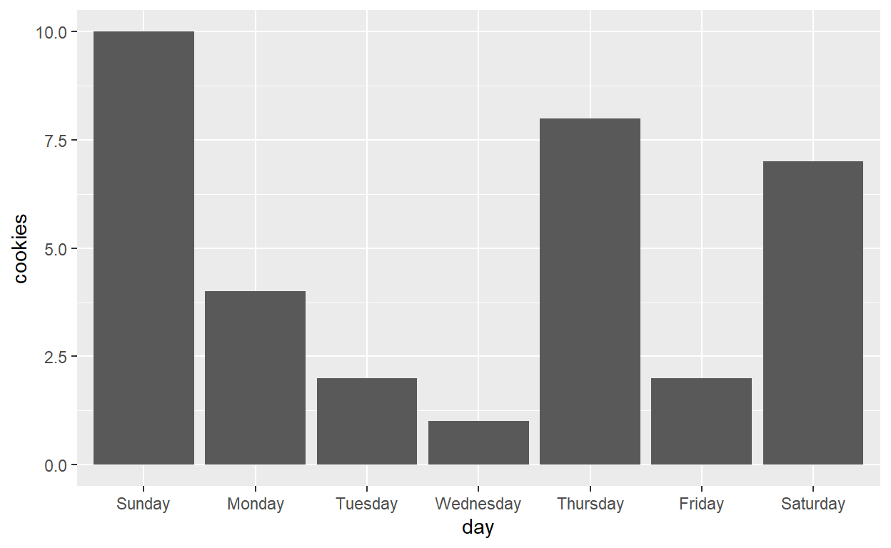

Installation
This tutorial provides a short, but interactive introduction of R and RStudio. Before we continue with explaining the R studio environment, you first have to install R, RStudio and the package tidyverse. Take the quiz below to see what you need to do.
What do you need to install?
Do you need to work through the installing of the software? Take the quiz below to find out.
Install R
Install RStudio IDE
RStudio is an Integrated Development Environment for R. What does that mean? Well, if you think of R as a language, which it is, you can think of RStudio as a program that helps you write and work in the language. RStudio makes programming in R much easier and I suggest that you use it!
Install Packages
Test your knowledge
Introduction to R
RStudio web server
Besides the RStudio environment which can be downloaded and run locally on your computer together with R, you can also work with R and the RStudio environment online. The advantage of the web server is that you don’t have to download and install R and RStudio on your device. You can upload and download data sets to work with. The RStudio web server looks exactly the same as the RStudio IDE, which is what will be shown mostly in the tutorials.
How to work with R and RStudio?
RStudio is an user-friendly environment to work with R. It is important to always work with a script, so you can save and look back at previously written code. When you opened a script, your environment should consist of four windows: 1) the script, 2) the console, 3) the global environment and 4) the files/plots/packages/help window (Figure 1).
Figure 1: RStudio environment
When you open RStudio, it is possible that only three windows are shown and no script is loaded. If this happens, you have to open a new script or load a saved script from your folder. A new script can be opened in four possible ways.
- Click the green plus button on the upper left in the tool bar and select R Script, or
- Go to File > New File > R Script, or
- Use Ctrl + Shift + N, or
- Use Command + Shift + N on Mac OS
After you have written your code, you need to save your script. With saving your script, it is necessary to consider “Good Academic Research Practice” (GARP). Not only the name of the script is of importance, also the folder structure in which the script is saved. If all scripts of different projects are saved within one folder, it is easy to lose track. Therefore, it is important to create a designated folder for the R Scripts per project or per analysis. Furthermore, to keep track of different versions of your scripts, it is also important to include a date or version number in the name of the script or in its header.
Running code
Writing code in a R Script is the first step, but the goal is to obtain output from the code by executing it. The output of the code will then be visible in the console, or in the plot-window if you executed the code to create a graph. You can execute, or run, the code in different ways. Your cursor should be on the line you want to execute:
- Click Run at the top right of the script window, or
- Use Ctrl + Enter, or
- Use Command + Enter on Mac OS
Practice the different ways of running lines with the code below. You can run the code in this tutorial, no need to open your own RStudio, we will do that in the following exercise. Notice that the Run in RStudio is replaced by Run code in the coding block in this tutorial.
5 * 10First Exercise in RStudio
Now it is time to apply all the theory from above in an exercise. This exercise will be done in your own RStudio environment: on your own device or in a web server.
- Open your RStudio environment
- Open a new R Script
- Copy the following code
(5 * 6 - 3) * log(2)
a <- c("hello", "world")
a- Run each line to see the output in the console.
- Save this script in a designated folder for this tutorial, because you are going to create more scripts. Give it a good name, with GARP in mind.
- Compare your screen with the picture below. Check for the following things:
- A new script is opened, where the code is written.
- The code and output of the three lines is shown in the console.
- The vector a, which consists of the values “hello” and “world”, is stored in the global environment
- The script has a good name which indicates its purpose
Figure 2: RStudio environment with exercise
Functions and objects
All the things you save are objects. Objects are a collection of data, ranging from one number or character to a complete data set. Look at the “numbers” object in the coding block. This is an object that contains 5 numbers. You can also save the output of functions in objects, which is done with the sum and mean of “numbers”. These are objects which contain one number each.
numbers <- c(1, 2, 3, 4, 5)
sum_numbers <- sum(numbers)
mean_numbers <- mean(numbers)
print(sum_numbers) [1] 15To perform tasks in R, you can use functions. Think for example about extracting the mean or the sum of a couple of numbers. sum() and mean() are functions, which you use to gather information. You can also use a function to generate a certain output, such as print() the object or create a graph with plot() or ggplot().
Exercise 1
For this exercise, print the object: mean_numbers
Hint: You may want to use the print() function.
Functions
A function is a piece of code that performs a certain operation. Input can be provided using arguments. Let’s look for example at drawing a sample from a normal distribution, which is often done for generating random data using the function rnorm.
Figure 4: Elements of function rnorm
As seen in Figure 4, the function rnorm has three inputs, which are provided using arguments in the function call. You have to provide the number of samples you want to draw from the normal distribution, the mean and the standard deviation of the normal distribution. The output of the function is n random numbers from the normal distribution with mean and standard deviation you provided.
rnorm(n = 5, mean = 1, sd = 1)[1] 0.2655071 0.8995143 3.3500206 1.2334939 1.4023596Especially in the beginning of your coding adventures in R, it is clearer to provide the arguments with its names, so n = 10, mean = 1 and sd = 1. You can also leave the argument names out, but beware of the order in which they have to be provided. Besides the order, you can also see if there are any default values set for the arguments. With the rnorm function, the default for mean = 0, and the default for sd = 1. If you don’t provide these arguments, the function will automatically use these default values.
Get help If you are stuck with a function, you can easily look them up in the help pages of RStudio, or google them. To access the help page of a function you can do this by hand or by code. You can find the help files in the bottom right corner of RStudio, where you can search for a function. Or you can run ?mean, or any other function name with a question mark before, to search for the help file of that function.
Test your knowledge
We do not expect that you know the answer to these questions immediately. We advise you to try these functions out in your RStudio environment and look at the help pages.
Exercise 2
For this exercise, generate 10 random numbers from a standard normal distribution.
Hint: Think about the default arguments of the rnorm function.
Objects
As said before, output of functions, called objects, can be stored in variables You do this with the assign operator, the <-. Before the assign operator, you set the name of the variable This name can be anything, just what you want and what is useful. If you call every variable data1, data2 etc., it is too vague and you don’t know what is in the variable.
Objects are a collection of data and therefore, we can describe multiple data structures in which the data can be stored. Furthermore, there are also various data types, such as character or numeric.
It is important to check the data type of your variables as R automatically assign it. Especially when reading in data sets, character variables can be transformed to factors. Also, with experimental data where some values are missing or below the limit of quantification (BLQ), R may transform this numeric variable to character. You will learn more about this in the next chapter: Data types.
Data types
Numeric and character
Numeric data consist of numbers, while character data consists of letters and/or words, as seen below.
num <- c(1, 2, 3, 4, 5)
char <- c("one", "two", "three")It is not only important to understand the different data types, but also to recognize them when working with your data. The most simple reason is of course doing calculations with character data will not work, so you need to be sure that it is numeric. You can check this with the funcion mode().
Exercise 3
- Check the data types of the two variables num and char.
num <- c(1, 2, 3, 4, 5)
char <- c("one", "two", "three")Hint: Use the mode() function.
- While you already knew the data type of these two variables, a variable of unknown data type has been loaded for you. It is called unknown. Print this variable and think about which data type it could be. Then, check your assumptions by checking the data type.
Hint: Use the print() and mode() functions.
Factors
Factors are a special type of data, as it categorize data and store it as levels. It can store both numeric and character data. It is useful to use factors when you have a vector with only a few unique values, think for example about male and female. Factors can also be used when sorting the data into groups to analyze per group, or create separate lines per group.

Especially with the example from above, we can see why factors are so handy. The first graph is created with a data frame which has the days as character strings, while the second graph is created with the days of the week in an ordered factor. While character data is ordered alphabetically, the order of factors can be set by hand, for example the days of the week in the correct order.
Logical and Boolean operators
Another data type is the logical. This is a data type which consist of two elements, TRUE and FALSE. You can also refer to it with T and F, but that is less common. Logical data can for example be used to indicate if someone received the dose = TRUE , or not = FALSE. However, it is often used to select data based on one or multiple conditions, as is demonstrated in the example below. The different boolean operators you can use to describe conditions, are shown in Table 1.
Table 1: Boolean operators
large_vector <- seq(1, 100, by = 3)
length(large_vector)## [1] 34large_vector == 13## [1] FALSE FALSE FALSE FALSE TRUE FALSE FALSE FALSE FALSE FALSE FALSE FALSE
## [13] FALSE FALSE FALSE FALSE FALSE FALSE FALSE FALSE FALSE FALSE FALSE FALSE
## [25] FALSE FALSE FALSE FALSE FALSE FALSE FALSE FALSE FALSE FALSElarge_vector != 13## [1] TRUE TRUE TRUE TRUE FALSE TRUE TRUE TRUE TRUE TRUE TRUE TRUE
## [13] TRUE TRUE TRUE TRUE TRUE TRUE TRUE TRUE TRUE TRUE TRUE TRUE
## [25] TRUE TRUE TRUE TRUE TRUE TRUE TRUE TRUE TRUE TRUElarge_vector > 90 | large_vector < 10## [1] TRUE TRUE TRUE FALSE FALSE FALSE FALSE FALSE FALSE FALSE FALSE FALSE
## [13] FALSE FALSE FALSE FALSE FALSE FALSE FALSE FALSE FALSE FALSE FALSE FALSE
## [25] FALSE FALSE FALSE FALSE FALSE FALSE TRUE TRUE TRUE TRUElarge_vector <= 10 & large_vector > 5## [1] FALSE FALSE TRUE TRUE FALSE FALSE FALSE FALSE FALSE FALSE FALSE FALSE
## [13] FALSE FALSE FALSE FALSE FALSE FALSE FALSE FALSE FALSE FALSE FALSE FALSE
## [25] FALSE FALSE FALSE FALSE FALSE FALSE FALSE FALSE FALSE FALSEsum(large_vector <= 10)## [1] 4We see that the large_vector has a length of 34 elements. Each element is compared to the condition you set, and a logical output is given: TRUE or FALSE. With the four conditions we evaluate, we see that each time 34 logical elements are returned, indicating if each element of the vector meets the condition or not. These 34 logical elements can be used to subset the data, which will be explained in another tutorial. To see how many elements met your condition, you can take the sum of this output. R considers TRUE to have the value 1, and FALSE to have the value 0, so you can sum this output to see many TRUEs you have obtained.
Exercise 4
The vector vector_exercise has been created for you. Use the coding block below to answer the quiz questions about this vector.
Hint: Use the boolean operators and the sum() function.
Other data types
After we discussed the numeric, character, factor and logical data type, it is now time to discuss some other specific data types: NA, NaN and Inf.
NA When an observation is missing, it is filled in with Not Available (NA). This is R’s way of saying that the data is missing and is not filled in with an arbitrary value. It is important to know if you have any NAs in your data, because some functions will not work unless you specify to ignore the NAs. For analyzing data, it is also often important to report missing data in your variables when publishing or presenting your results.
NaN Whenever a result cannot be calculated, it will show Not a Number (NaN) as output. Be aware! This is not the same as NA, which indicates that data is missing for unknown reasons. For example, you can see this output when dividing zero by zero or taking the square root of a negative number.
#NaN
0 / 0 ## [1] NaN#NaN
sqrt(-4)## Warning in sqrt(-4): NaNs produced## [1] NaN#Inf
1 / 0## [1] InfInf The last special data type which can show up in the output, is infinity (Inf). It tells you that the number is extremely large, or that you divided by zero.
Data structures
Vector
A vector is the most simple data structure, as it has only one dimension. Vectors only have one data type assigned to them, as seen in the code below. Even when different data types are combined in one vector, one type has the preference over the other. Therefore, always be sure what type you are working with.
mixed <- c(5, 10, 15, 20, "even", "uneven")
mode(mixed)## [1] "character"other <- c(NA, NaN, Inf, TRUE)
mode(other)## [1] "numeric"one_missing <- as.factor(c("female", "male", NA, "male", "female"))
mode(one_missing)## [1] "numeric"Test your knowledge
Dataframe
A data frame is a bit more complex, as it is a data structure with 2 dimensions: rows and columns. The data frame is comparable with a spreadsheet in Excel. Each row is an observation, and each column describes a variable. Each column/variable can be a different data type, as seen in the example data set below.
Besides working with read in data frames from your analyses or clinical trials, you might want to create data frames. You can easily create them by combining different vectors. You can create the vectors separately or while creating the data frame.
#vectors separately
id <- 1:10
sex <- factor(rep(c("male", "female"), 5))
conc <- rnorm(10, mean = 10, sd = 2)
PK <- data.frame("id" = id, "sex" = sex, "conc" = conc)
PK#all together
PK2 <- data.frame("id" = 1:10, "sex" = factor(rep(c("male", "female"), 5)), "conc" = rnorm(10, mean = 10, sd = 2))
PK2List
Next is the list, which may seem complicated, but has just one dimension. You can for example compare it to a box of eggs. The box with eggs in it, is the list, with elements in it. The eggs represent the different elements of the list. When you crack open the egg, you will see the content of the element. This content can be of every data type and structure, even lists within lists are possible. A few examples are shown below.
## [[1]]
## [1] "hello"
##
## [[2]]
## [1] "goodbye"## [[1]]
## [[1]][[1]]
## [1] "one"
##
## [[1]][[2]]
## [1] "two"
##
##
## [[2]]
## [1] 1 2## [[1]]
## weight group
## 1 4.17 ctrl
## 2 5.58 ctrl
## 3 5.18 ctrl
## 4 6.11 ctrl
## 5 4.50 ctrl
## 6 4.61 ctrl
## 7 5.17 ctrl
## 8 4.53 ctrl
## 9 5.33 ctrl
## 10 5.14 ctrl
## 11 4.81 trt1
## 12 4.17 trt1
## 13 4.41 trt1
## 14 3.59 trt1
## 15 5.87 trt1
## 16 3.83 trt1
## 17 6.03 trt1
## 18 4.89 trt1
## 19 4.32 trt1
## 20 4.69 trt1
## 21 6.31 trt2
## 22 5.12 trt2
## 23 5.54 trt2
## 24 5.50 trt2
## 25 5.37 trt2
## 26 5.29 trt2
## 27 4.92 trt2
## 28 6.15 trt2
## 29 5.80 trt2
## 30 5.26 trt2
##
## [[2]]
## [[2]][[1]]
## [1] "hello"
##
## [[2]][[2]]
## [1] "goodbye"The first list consists of 2 elements of which each contains 1 word. The second list consists again of 2 elements: one list with 2 elements, and one vector with 2 elements.
Test your knowledge
Programming structures
Now that we have discussed the basics of functions and objects, we dive a bit deeper and discuss common programming structures, also called control structures. Programming structures in R allow you to control the flow of your code. They are also the basic building blocks when writing functions.
if and else
Especially working with large data sets, you don’t want to repeat the same line code over and over again. If a general pattern can be found in the data where you want to apply this same line of code, you can use an if-statement. You can combine this with an else-statement if you have two, or more different subsets of data on which you want to perform different operations.
x <- 6
if (x > 5.5) {
print("Passed")
}## [1] "Passed"A good example of this control structure is the one standing above, where you compare a value to the condition value and print a statement if the value meets the condition. If you want to specify what happens when the value does not meet the condition, you can add an else-statement, which is done in the examples below. If the condition you set is not met, the else-statement will be evaluated. In this way you can lace if-else statements together to describe all conditions you have. The value you test, will always go chronically through you if-else-if-else statements. So in this case, if we look at the bottom example, where z is evaluated. z isn’t above or equal to 5.5 and it continues to the next statement. In the next statement you do not need to specify that z needs to be between 4 and 5.5 to be able to do the resit, because that was already ruled out at the first evaluation.
y <- 4
if (y >= 5.5) {
print("Passed")
} else {
print("Failed")
}## [1] "Failed"z <- 2
if (z >= 5.5) {
print("Passed")
} else if (z > 4) {
print("Resit")
} else {
print("Failed, try next year")
}## [1] "Failed, try next year"If you want to check a whole variable or vector to see which values meet the condition, you cannot do that by only using this if-statement. As you can see below, it will return a warning, but it does execute! As the warning states, it will only use the first element in the if-statement. Because the first element of the variable avg meets the condition, the text is printed.
average_grades <- c(8.5, 5.1, 7.9, 9, 6.5)
if (average_grades >= 8) {
print("Passed cum laude")
}## Warning in if (average_grades >= 8) {: the condition has length > 1 and only the
## first element will be used## [1] "Passed cum laude"If you want to use an if-else statement on a vector or variable, you have multiple options. One option is to use the function ifelse. This function can handle vectors and will evaluate each element and give the correct output. You have to provide an “else”, so what needs to happen if the value does not meet the condition. Furthermore, you can lace various ifelse-statements, we cal this nested.
average_grades <- c(8.5, 5.1, 7.9, 9, 6.5)
ifelse(average_grades >= 8, "Passed cum laude",
ifelse(average_grades >= 5.5, "Passed", "Failed"))## [1] "Passed cum laude" "Failed" "Passed" "Passed cum laude"
## [5] "Passed"Test your knowledge
Exercise 5
Look at the table below, which describes the cutoffs for doing the resit and passing the course. It is based on two grades: Assignment and Exam. Remember the boolean operators to describe the conditions. Use nested ifelse functions to print all possible results. Next, test your ifelse-statements on the assignment and exam grades.
| Assignment | Exam | Result |
|---|---|---|
| >=5.5 | >=5.5 | “Passed” |
| <5.5 | >=5.5 | “Resit assignment” |
| >=5.5 | <5.5 | “Resit exam” |
| <5.5 | <5.5 | “Resit both” |
#write your ifelse statements below to describe all possibilitiesHint: Start in the first ifelse() function by describing the first condition, then what should be printed if the condition is met. If the condition is not met, put another ifelse() function to describe another condition.
ifelse(Assignment >= 5.5 & Exam>=5.5, "Passed",
ifelse(Assignment < 5.5 & Exam >= 5.5, "Resit assignment",
ifelse(Assignment >= 5.5 & Exam < 5.5, "Resit exam",
ifelse(Assigment < 5.5 & Exam < 5.5, "Resit both"))))#print *Assignment* and *Exam* grades, to compare your output from above with the grades and see if you have done it correctlyfor loop
There are different types of loops you can use to prevent running the same line of code over and over again. Here, we will discuss the for loop.
Figure 5: For loop
As you can see in Figure 5, the for loop executes the expression(s) which are stated in its body, until the last item of the sequence is reached. You determine this sequence, for example all observations in a data frame, or just as simple as counting to 5 The example standing below shows the simplest application of a for loop.
for (x in c(1, 2, 3, 4, 5)) {
print(x)
}## [1] 1
## [1] 2
## [1] 3
## [1] 4
## [1] 5The x is arbitrarily chosen, but represents each element in the sequence. So for each x the for loop will execute what is described in its body, in this case print the element. You can choose anything you like as the x, but usually only one letter is used and not complete words. A more applied use is to determine how many concentration measurements are below a certain threshold, for example the minimum concentration when a medication is working.
Loop control
The for loop will run until the sequence is completed, however you can also manually control the loop. For example, you can skip one number/letter in the sequence or ensure that it stops on time. While the for loop usually will not run out of control, a while loop may do that and you include a break statement.
Two important statements you can use to keep control of the loop. next to immediately skip a number in the sequence and break to define when to stop/break the loop. With the two examples below, you can easily see the difference. With next, you will skip number 5, but print all other numbers. With break, you will break the loop at number 5 and not continue the loop after that.
#skip number 5
for(i in 1:10) {
if(i == 5) {
next
}
print(i)
}## [1] 1
## [1] 2
## [1] 3
## [1] 4
## [1] 6
## [1] 7
## [1] 8
## [1] 9
## [1] 10#break the loop
for(i in 1:10) {
if(i == 5) {
break
}
print(i)
}## [1] 1
## [1] 2
## [1] 3
## [1] 4Read and write data
When working in R, you often have to load data sets to work with and at the end, save the adapted data sets. To do this right, you need to understand what your working directory is. The working directory is the location on your computer where you are working: reading and saving images, data sets and scripts. It doesn’t matter where your working directory is, as long as you can find it and save all your scripts, data sets and images in the correct folders. Use the code standing below in your Rstudio environment to check your working directory.
getwd()Rstudio webserver
If you are working on the Rstudio webser, you will probably see that your working directory is similar to: “/cloud/” or “-/”. This is perfectly fine, and you can change it by adding a folder there for your project. For example “-/Marinda/Project1”. However, you can not link to a folder on your own computer.
Changing your directory
As described in the chapter: Introduction to R, you need to have a designated folder per project where you are going to save your scripts and data sets. It is most likely that you will also you this folder as your working directory. You can create subfolders to save images and data sets separately.
Exercise 6
Set your working directory to a designated folder for these R tutorials. You do this with the setwd function. Please make sure to use forward slashes in your folder path, R does not recognize the backslashes.
#Example
#setwd("C:/Users/kuijlamvander/surfdrive/R kennisclips/R_tutorials")
#Fill in yours
setwd()Reading in data
When reading in data sets or images, you have two options. You can read it in via the absolute path, if it is not in your working directory or you do not want to use your working directory. You can also read it in via the relative path if the data sets are placed within the working directory or a subfolder of it, NOT in a folder above. You can easily access the working directory and folders or data within via the relative path, with the code standing below. The benefit is that others can easier replicate your code, if they have the same data sets in their working directory, the relative path is the same, but the absolute path is different.
#Absolute path
file <- "C:/Users/kuijlamvander/surfdrive/R kennisclips/R_tutorials/data_sets/example_data.csv"
#Relative path to working directory
wd <- "./"
#Relative path to folder data_sets in working directory
wd_folder <- "./data_sets/"
#Relative path to example_data.csv in data_sets folder
wd_folder_data <- "./data_sets/example_data.csv"Looking at the examples above, we first see the complete absolute path to the example_data. As you can see, this very specific part only applies to one person, as you will probably not have the user kuijlamvander on your C-drive. Therefore, it is more convenient to use relative paths. The person who wants to run your code only has to set his working directory once and can then use all your relative paths to data sets, if he/she has the data sets in his working directory. So, you refer to the working directory with a dot, and use forward slashes to indicate something in the working directory: a subfolder or a data set.
You should always check two things when reading in data. First, the automatic assignment of data types. Characters are often read in as factors, but you can prevent this by setting the argument StringAsFactors to FALSE in the read function. Secondly, when reading in a csv file, which is most commonly used with data analysis, attention should be paid to the separator between columns and decimal symbol. A csv file, a comma separated file is often used on English based systems, which uses the decimal point. A comma as separation symbol will not mess with the numbers. However, with a Dutch system, the decimal symbol is a comma. The semicolon is then often used to separate the columns. Make sure to set your dec and sep arguments in the read.csv function to the decimal separator and column separator your system use.
Write data
Writing data, the opposite of reading in data, is done at the end of your data manipulation and is used to save the changed data set in a folder in your working directory. You will most often use the csv file as your output for data sets, but sometimes also png or pdf for figures.
CSV files As discussed before, Dutch systems handle csv files differently. They can replace the comma as separation symbol with a semicolon when a csv file is created in Excel, or they can misunderstand the comma separation, because it is also the decimal symbol. Especially with writing a csv file from R, the comma is automatically placed as separator, and dots are used as decimal symbol.
Exercise 7
Copy the code standing below to import the data set Theoph, which is an existing data set from R. Then write the data set to a location in your working directory, you can for example place it in a folder called data. Next, read your file back in again, but give it a different name than Theoph. Compare the two with the last line of code to see if you correctly wrote and read in the data set.
data("Theoph")
Theoph
write.csv() #check the arguments to see what you need to fill in.
#Write your own name for this data set in place of the NEWNAME and finish the code within read.csv
NEWNAME <- read.csv() #check the arguments to see what you need to fill in.
all(NEWNAME == Theoph)